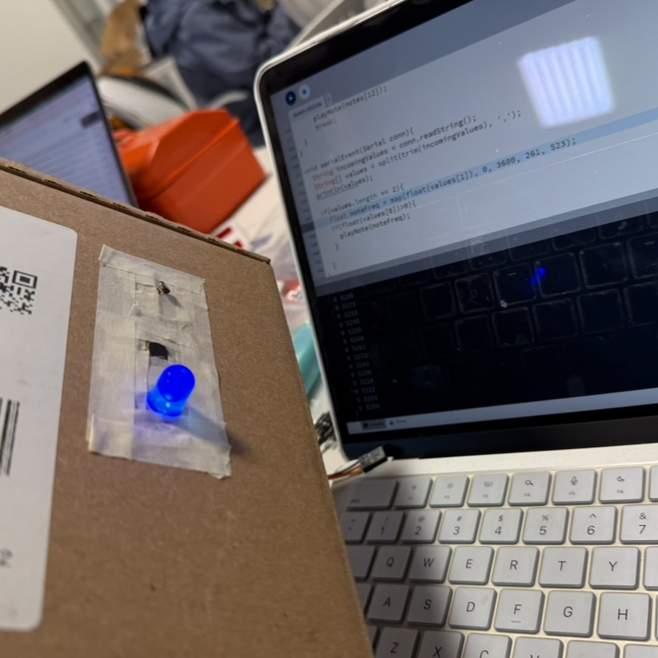

1. Circuit Connection
Button Connection
- Connect one terminal of the button to Arduino PIN 13.
- Connect the other terminal to GND.
- Place a 10kΩ pull-down resistor between PIN 13 and GND to prevent floating signals.
Photoresistor (LDR) Connection
- Connect one terminal of the LDR to 5V.
- Connect the other terminal to A3 PIN and one side of a 10kΩ resistor.
- Connect the other side of the resistor to GND.
2. Steps to Build the Instrument
Step 1: Design and Test the Circuit
- Follow the circuit connection instructions and assemble the components on a breadboard.
- Upload the Arduino code and use the Serial Monitor to verify the button and photoresistor readings.
Step 2: Prepare the Paper Box
- Choose a sturdy paper box that can house the Arduino and sensors.
- Cut a hole on the top for the LDR to sense light from outside.
- Cut another hole on the side for the button, ensuring it’s easy to press.
- Create a small slot at the bottom for the USB cable to connect the Arduino to your computer.
Step 3: Assemble the Instrument
- Mount the photoresistor through the top hole and secure it with tape or hot glue.
- Install the button through the side hole and fix it firmly.
- Route the wires from the sensors into the box and connect them to the corresponding Arduino pins.
- Place the Arduino inside the box and secure it with tape or adhesive to keep it stable.
3. Build Gallery
